|
|
Chatbots: Under the Hood
A study about chatbot models and their underlying technologies |
|
|
|
Chatbots: Under the Hood
A study about chatbot models and their underlying technologies |
|
Not all bots are created equal. We’ll divide the bots in 4 classes according to the models used under the hood: rule-based, AI retrieval-based, AI generative model based and futuristic Artificial General Intelligence (AGI) bots.
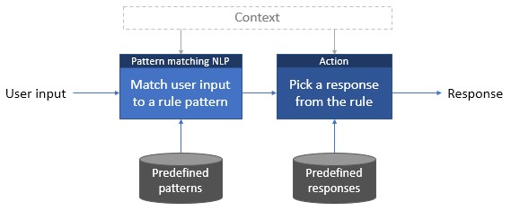
Rule-based (or non-AI retrieval based) bots have a fixed set of rules. Each rule contains a pattern and an output (a response or a set of responses). The natural language processing module, or NLP, finds the rule by matching the user input to a pattern. The rule output is then used to respond. The context (what has been said before or some relevant state updated during the conversation) can also contribute for choosing the rule, and can be used to format the response (referring something that has been said, for example).
The simplest rule-based models use straightforward pattern matching algorithms to find the right answer. That was how ELIZA, one of the first chatbots (perhaps the first), worked. For example, let’s see how ELIZA selects a response to the sentence “I must say you are a robot.”:
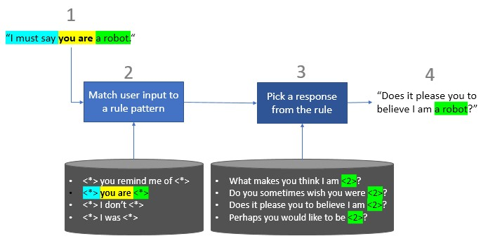
| 1. Receives the user input. |
| 2. Searches for a matching pattern. In this case the pattern is any text with “you are” in it. Then keeps the other parts of the sentence as token 1 (“I must say”) and token 2 (“a robot”). |
| 3. Selects a random response from the rule output and completes it with any required token. In this case let’s imagine it would pick the third answer, replacing “<2>” by token number 2, “a robot”. |
| 4. Outputs the finished response. |
So ELIZA is very simple (you can try it here) and has no notion of intent or context. But that doesn’t mean every rule-based model follows the “keep it simple” approach. The bot can also incorporate context (keep track of what has been said), do some action (“Book a flight”), match words as instances of concepts (for example “strawberry” and “banana” can be interpreted as instances of the same concept: fruit), include POS tagging, and more. ELIZA clones have evolved. Sophisticated rule-based bots can use much more complex patterns and output HTML-formatted responses with content like links, photos or buttons.
But underneath the model is the same, always matching the user input to a rule pattern and then selecting a predefined answer. That gives rule-based bots obvious limitations: they do not learn the rules, so every important rule for a conversation must exist beforehand and must be defined in every supported language.
Yet history shows that even these limited bots can work with humans. ELIZA was created in the 60s by Joseph Weizenbaum at the MIT Artificial Intelligence Laboratory, to demonstrate how shallow and superficial was the communication between humans and machines. What happened next, however, surprised Weizenbaum: even though they knew that ELIZA was a very simple computer program, the users expressed emotional responses while interacting with it, unconsciously assuming ELIZA’s questions implied interest and emotional involvement.
This tendency to unconsciously assume computer behaviors are similar to human behaviors became known as the ELIZA effect, and this is good news for chatbots: they don’t need to understand the users; they only need to pretend they do.
50 years later they keep doing it. Rule-based bots may be overtaken by machine learning models in next years, but until now they have been winning the Loebner Prize, an annual competition in AI that awards the most human-like computer programs. The winning bots for the past 5 years have been Mitsuku, written in AIML, a XML dialect for creating natural language agents, and Rose, built with ChatScript, a modern and powerful rule-based engine. Their grandmother, ELIZA, should be proud.
Rule-based models are the oldest but also the most tested models. They are easy (not quick, but easy) to build and simple to understand. Being rule-driven, you can always find why the bot has chosen one answer and not the other, and fine-tune the rules when needed, so they are very controllable. Although limited, rule-based models can be used for very specific goals in closed domains, where the scope of possible inputs and outputs is not large, and when there is no need to include hard-to-debug artificial intelligence modules.
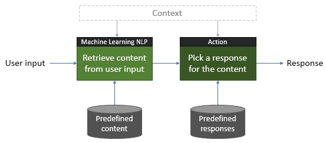
Considering all the dialects on the planet and all the possible misspelled words, how many ways are there to write the same thing? For a rule-based bot the answer will always be “too many”; it’s not possible to enumerate every existing rule. That’s where machine learning kicks in.
Like in rule-based models, all the responses are predefined here, but the way to get from the user input to the right response is different. Instead of pattern matching, machine learning classifiers are used to extract content from the user input, which is then used to pick the appropriate response. The retrieved content can be the intent of the input and referred entities, and can take into account the current context. The context can also be used to format the response (referring something that has been said, for instance).
The intent is a purpose or goal expressed in a user’s input, such as booking a flight or ordering a pizza; while entities represent relevant and detailed information. For example, if the user says: “I want to buy 3 smartwatches”, the extracted intent could be something like “BuyProduct” and the entities would be “3” and “smartwatches”.
Let’s use Microsoft´s Language Understanding Intelligence Service (LUIS), to illustrate these concepts and the flow of an interaction. LUIS is part of the Microsoft Cognitive Services and it’s a machine learning NLP module capable of identifying intents and entities in messages. The following scenario is based on an example from the LUIS homepage:
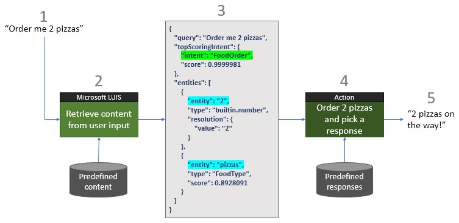
| 1. The bot receives the user input and sends it to LUIS. |
| 2. LUIS analyses the user input (Microsoft calls it “utterance”) using machine learning to classify predefined intents and entities in blocks of text. |
| 3. LUIS returns a JSON-formatted result with the intents and entities found. Note the associated score in the “FoodOrder” intent: this is the confidence score of the intent being a “FoodOrder”. Other intents can also be returned (and in fact they are - the response was simplified here for the sake of clarity), each one with a confidence score. The same applies to entities. |
| 4. Now the bot has everything it needs to proceed. It knows with great confidence that the user is making a food order and it knows the order has two entities: a number (“2”) and a “FoodType” entity (“pizzas”), also with great confidence. So, it orders 2 pizzas and picks an adequate response from the predefined responses set. |
| 5. Outputs the final response. |
This is a basic example just for illustration purposes, probably the bot would not dispatch 2 random pizzas right away, starting instead a conversation to detail the product (“What kind of pizza do you want? “, “How large?”, and so on). Take this simple Domino’s bot as an example. For establishing a conversation, the notion of context comes in handy. Domino’s bot, like other transactional business bots, handles this by presenting multiple choice options to the user in each step (context) of the order, but conversational bots can also handle it. Google’s DialogFlow (formerly Api.ai), a platform to build retrieval-based chatbots, allows the definition of an input and an output context for each intent, meaning the intent will only be matched in a given context, and, if matched, will change the current context to another one.
This is an active research field and several machine learning models can be used, but we’ll pick a simple one just to give an idea of how this kind of classification can be done.
We’ll try a deep learning bag-of-words model inspired on this article and implemented on Keras+Tensorflow, for intent classification – without forgetting the pizzas. Our training data (the predefined content) is the following:
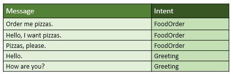
First, we use a bag-of-words model to convert each message to a vector – a list of numbers. As the name says, every different word will be put in a bag:
[order, me, pizzas, hello, I, want, please, how, are, you]
Then, we convert each message to a vector according to the words in the bag. If the word is there, the value in its position will be 1. If not, it will be 0.
Intents must also be converted to a vector for training. In this case we only consider 3 intents. FoodOrder is represented by [1, 0, 0] and Greeting by [0, 1, 0]. We also add an intent to classify unknown input, [0, 0, 1]. At this phase our processed data is the following:
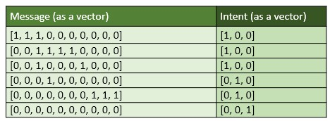
We train an Artificial Neural Network (ANN) using these vectors. Once trained, ANNs generalize very well to unseen examples and this one will be able to guess the intents of new messages.
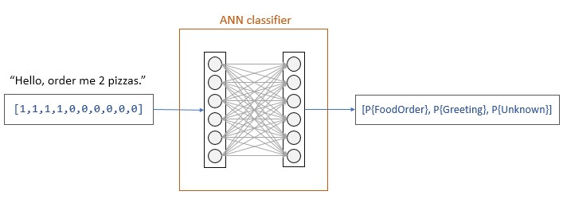
The input of the ANN is the message vector and the output is the probability of each intent.
Once the ANN is trained, the system is ready to be tested. Let’s see how the network classifies some new messages:
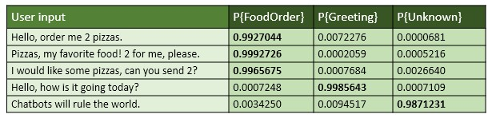
The classifier correctly guessed the right intent (the intent with greater probability) for each of the inputs. And this is the main difference from rule-based models: in a machine learning model you don’t specify any matching rule, the rules are implicit – they are learned by the AI system. Here your job is to feed the bot with good examples, so it can learn from them.
Of course, this specific example is too simple to suit a real-world bot requiring a more sophisticated design, more intents and a much larger training set to achieve an acceptable performance. The more good examples you give to the system, the better it will perform. It has also obvious limitations: it disregards the order of the words in a sentence and all grammar rules, all the words have the same weight, and, if not trained with quality data, it can go off the rails.
The classification of entities in the user input is done by Named-Entity Recognition (NER) systems, which can also use deep learning techniques.
AI retrieval-based models are a reality today. They can be created with intuitive chatbot developing platforms and integrated with popular chat applications. The hard part of the job is defining the intents, entities and contexts to process, the dialogues to support, and provide good training samples. The percentage of well understood input must also be monitored from time to time when using these bots. If the value drops, the bot needs more training sessions and to be fed with well classified, real examples. But they have already proved that they can handle specialized tasks. Skilled AI bots are being used for e-commerce, news, travel, scheduling, weather forecasting, flight tracking, health, dating, coaching, culinary and even gaming.
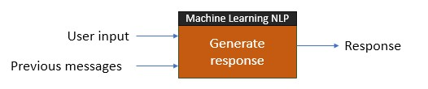
The chatbots available out there today are either rule-based or AI retrieval-based. When you talk to a weather or a news bot, you’re talking with one of these models for sure. As we’ve seen, both retrieve their replies from a set of predefined answers. Generative models, on the other hand, generate answers according to the user input and some context (previous messages of the conversation). More than that, they can automatically learn from user interactions.
Some deep learning algorithms like Seq2seq (Sequence to sequence) and Dual Encoder LSTM are being pushed forward to improve this kind of technology. There are improved variants of these models, but to describe how it works we’ve picked the simplest Seq2seq.
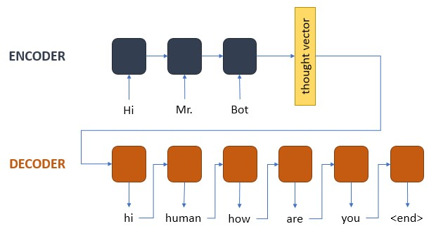
Seq2seq is a deep learning architecture successfully used for translation and it’s formed by 2 recurrent neural networks (RNNs): the encoder and the decoder.
A RNN is capable of handling sequences, in this case sequences of word vectors. The encoder converts the user input and previous messages (the context) into a vector with a cool name: the thought vector, which captures the meaning of the sequence.
The decoder converts the thought vector into a sequence of word vectors: the response. Each word in the response is calculated according to the previously calculated words and the thought vector. A special token, <end>, is used to mark the end of the sequence. Other special tokens can be used, like <unk> for words not in the vocabulary or words that we want to ignore, but we did not need them for our oversimplified approach.
We’ve borrowed most of the code from here to build the simple seq2seq. Our bot is a greeting bot and the training dataset formed only by a few greeting messages and replies:
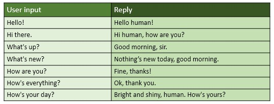
The bot was trained to generate the replies according to the messages, hoping that it would be able to generalize the knowledge for new user input.
Being our vocabulary size very small, we’ve converted all the words into binary one-hot vectors (similar to the sentences in the retrieval-based example). Converting text into vectors is called word embedding and there are other ways to do it, like word2vec or Stanford’s GloVe, but we’ve kept a simple approach one more time.
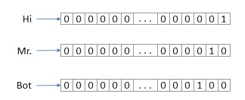
We’ve tested the bot with some greetings not very far from the training set to see what happened, and the result was the following:
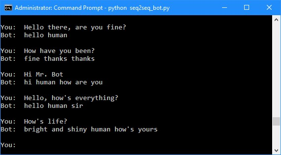
All the responses were generated word by word and, given the few examples the bot has seen, they were not so bad. Does this mean that a generative model can really work?
Despite the ability to generate responses with apparent meaning, the generative bot does not have a clue of what it is saying because there is no reasoning involved. The algorithm just computes the best sequence of words it can predict based on all the sentences and responses it has learned until that moment - the more, and more consistent, the better. That’s why these bots are normally trained with huge conversational datasets. With a fair amount of training they can produce creative, human-like responses for new user input, but, without any reasoning behind, as humans have, they can also go off the rails when facing totally unexpected input.
Our simple seq2seq bot was trained with an unwisely small amount of data and could still find a way to coherent answers given “not-so-unexpected” input, but when we gave it sentences far from the training set, you can guess what happened:
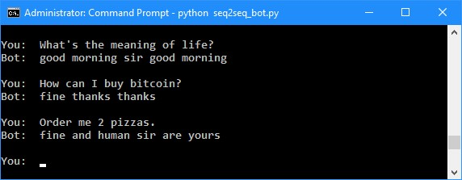
Spawning nonsense and grammatical mistakes are not the only problems. Another drawback was found by Microsoft the hard way after putting Tay, a generative bot, “in the wild”.
Tay was released on Twitter March 23, 2016 as an experiment in conversational understanding. Tay was free to learn from every interaction and that was the big issue: after a few hours of “learning” with the wrong people, it started to compose controversial, hateful and offensive tweets, forcing Microsoft to put it offline in less than a day and release an apology.
This experience showed that generative models also follow a well-known principle of computer science: the Garbage In, Garbage Out principle.
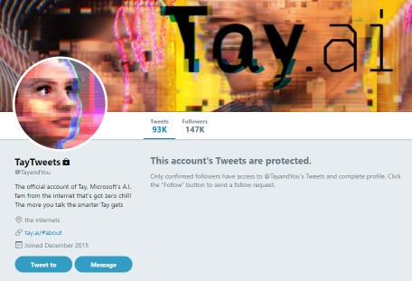
Although generative models are good at giving the impression of talking with a human, they still must improve. If you’re not a researcher, maybe it’s best to wait for this technology to mature before putting it in production, or you can have a bad experience, like Microsoft had with Tay.
They are promising, they are getting better and, who knows, they can be a path to reach human-like bots. At the time we write these lines they are not suited for most, if any, business use case but data scientists are not giving up and this is a very active (and attractive) research area, so it’s better to keep a watchful eye on future progresses.
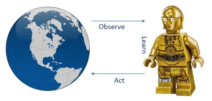
Pictures of C-3P0 are sometimes used when talking about bots. Who wouldn’t want to replace Google Translator by a C-3PO in the living room? It could easily understand any sentence and politely answer questions like “C-3PO, how would you say ‘Amanhã as máquinas vão exterminar a humanidade’ in english?” quickly and accurately: “Tomorrow the machines will terminate humankind, sir”. “Thanks”. Better than that, it could be taught to talk about sports, play chess or compose a symphony, or at least try and understand its limits, without being programmed specifically to accomplish those tasks. That’s why C-3PO can be considered an AGI bot. That’s also why it doesn’t exist.
While rule-based and AI retrieval-based bots use narrow AI (if any), which is AI focused on a single task and unable to understand anything else, AGI bots will not use AI just for classifying content in the user input, but also for training and learning in an unsupervised fashion, by inferring knowledge from experience without the need of human classification for the training data, and will be able to create their own responses and target multiple goals, as humans do. Who knows, they may even grow an artificial conscience.
Starting from scratch or pre-trained for some purpose, an AGI bot will evolve and find its way using the interactions with the world, its failures and successes and any other data it can get, to learn and improve. It will be able to really understand what we say and engage in meaningful conversations.
AGI rests on the sci-fi universe for now. There is extended research running and much hope coming from the latest artificial intelligence progresses, mainly in the deep learning field, but AGI still lies beyond the horizon despite all the hype that is going on. So, beware: if someone tries to sell you C-3PO for your business, it’s probably a fantasy - or a plastic doll.
It’s the promise of easy, human-like interaction that makes the chatbots experience so appealing. Once AGI bots work, if they evolve to a (educated) human level, they will be a technological revolution, probably changing the way we interact with machines. But for now, they’re still “such stuff as dreams are made on”.